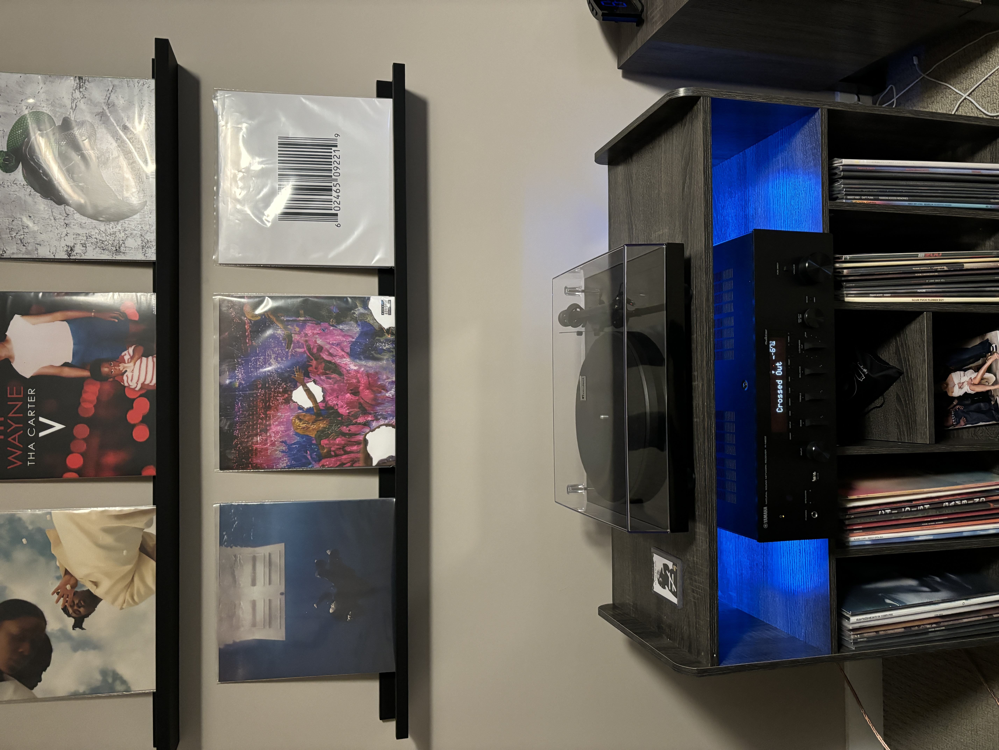
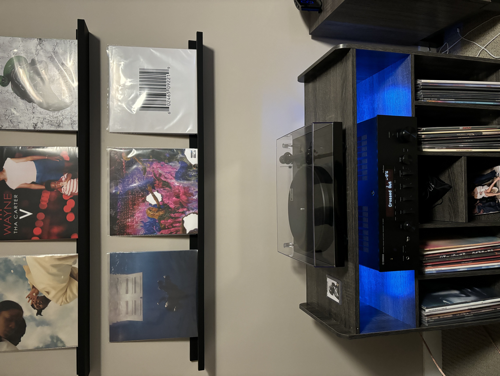
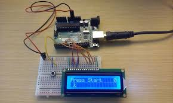

Record Collecting
I love music in general, so what better way to listen to music than with something you can hold in your hands? My uncle got me into records when i was 16 and since then i've built a collecion of almost 200 records. Although my collection is primarily hip-hop, I love all music and have a passion for listeng to new music on vinyl.

 

Circuit Projects
I discovered Arduino in my second year of university, and I instantly fell in love with the fun I was having making projects. As a computer science major, it was super easy to learn how to program and use the Arduino, which was a head start. Developing projects has become one of my favourite activities, and i've learned to make things like a weather station, a smart mirror, and a smart home system. I love the feeling of creating something from scratch and seeing it work in real life.